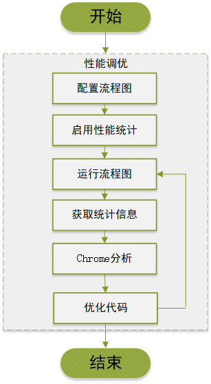
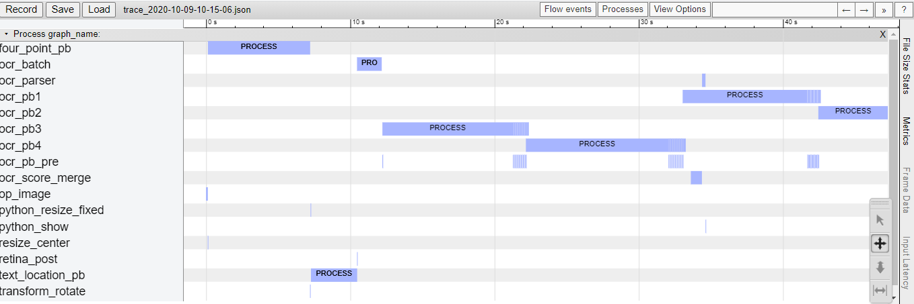

性能统计
ModelBox提供了统计功能单元，以及运行任务的时间统计功能，开发者或维护人员可以开启性能统计功能，对功能单元或运行状态进行调试和维护。
性能统计操作流程

- 配置流程图。
- 配置文件中指定启动profiling。
- 运行流程图。
- 获取统计信息。
- chrome浏览器打开
chrome://tracing/。 - 优化代码，重新分析。
- 性能满足要求后，结束。
启用性能统计
启动ModelBox的性能统计功能，只需要在Flow的toml配置文件中增加如下配置，即可启用。
[profile]
profile=true # 启用profile
trace=true # 启用traceing
dir="/tmp/modelbox/perf" # 设置跟踪文件路径
通过配置profile和trace开关启用性能统计，dir配置存储跟踪文件路径；配置启动后，启动运行流程图，profile会每隔60s记录一次统计信息，trace会在任务执行过程中和结束时，输出统计信息。
显示性能统计
运行流程图后，会周期生成timeline性能相关的json文件，通过将json文件加载到chrome trace viewer中即可查看timeline信息。
- 打开chrome浏览器。
- 浏览器中输入
chrome://tracing/。 - 点击界面中的
Load按钮，加载trace的json文件。 - 加载成功后，将看到类似下面的timeline视图。视图提供了选择统计、平移、缩放、时间间隔等基本功能可用于分析性能瓶颈
